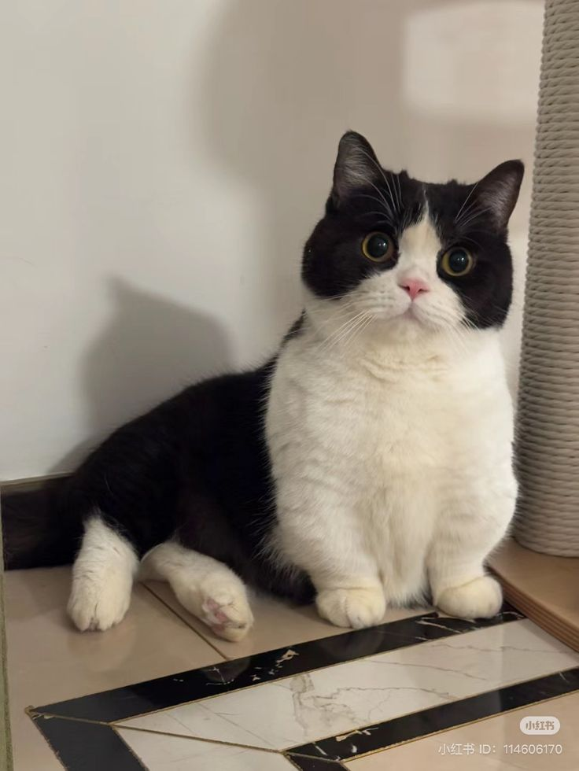
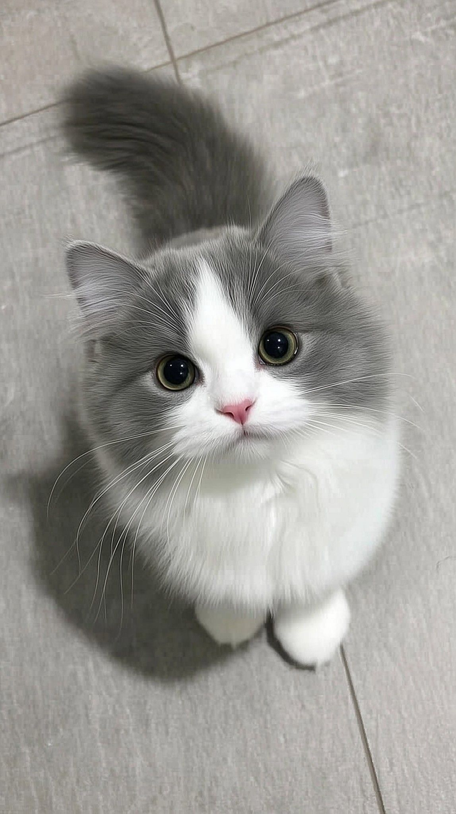
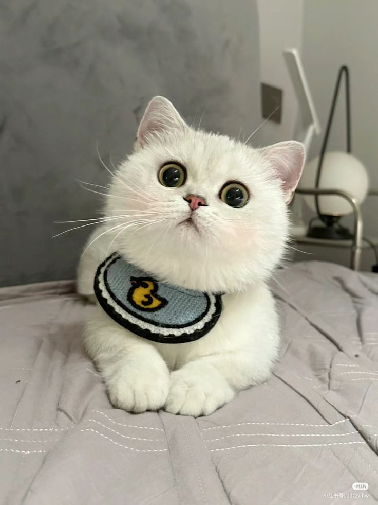
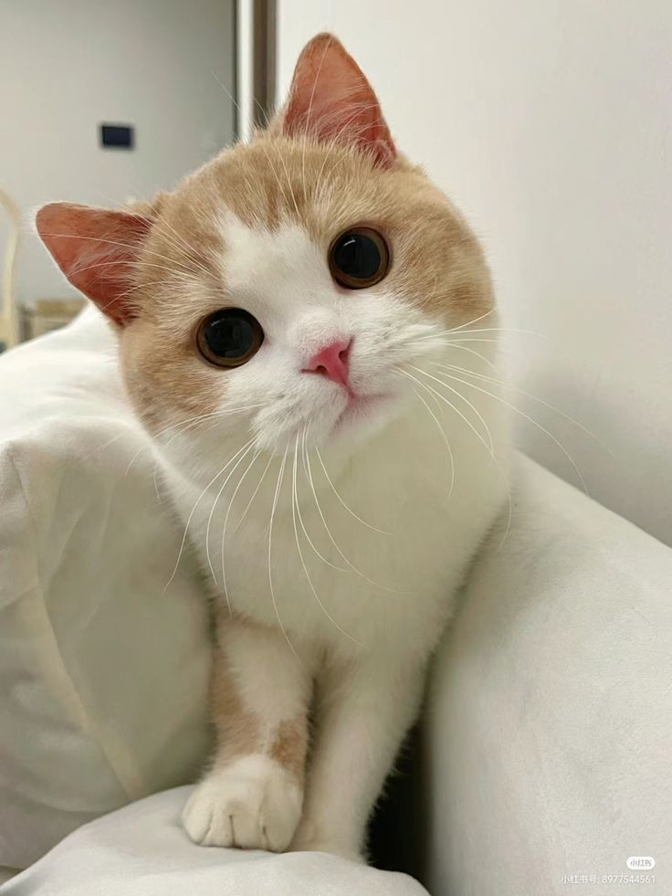

|
 |  |  |  |
|---|---|---|---|---|
|
|
คุณพิมพ์ชนก “ชอบระบบของเว็บไซต์มาก มีรูป มีข้อมูลชัดเจน บอกนิสัยแมวตรงความจริง ทีมงานให้คำแนะนำหลังรับเลี้ยงด้วย ตอนนี้น้องกลายเป็นสมาชิกใหม่ของครอบครัวไปแล้ว”
|
คุณวรพล “ผมรับน้องแมวโตจากเว็บนี้ กลัวว่าน้องจะปรับตัวยาก แต่เว็บให้ข้อมูลครบ ทั้งสุขภาพและพฤติกรรม ทำให้เตรียมตัวถูกต้อง ตอนนี้น้องกินเก่ง เล่นเก่ง และติดผมมากครับ”
|
คุณสิริพร “ประทับใจความโปร่งใสของเว็บไซต์ มีอัปเดตค่าใช้จ่ายและประวัติการรักษาชัดเจน หลังรับน้องมาทีมงานยังคอยถามไถ่และให้คำแนะนำ น้องแมวแข็งแรงและมีความสุขมากค่ะ ” |